Get Involved
How to Participate
Phase 0 is the right moment to ask questions, raise concerns, and help shape what comes next.
Village Residents & Landowners
Your land, local knowledge and voice shape the design. Join the community consultation.
Foresters & New Residents
Paid, multi-skill roles as we double the co-op crew — with relocation & training grants. Plus feasibility & technical partners.
Investors & Philanthropists
Phase 0 funding for feasibility studies, legal structure, and early outreach.
Researchers & Academics
Collaborate on open data, carbon measurement, and rural energy modelling.
Other Rural Communities
Everything built here is documented and shared openly — free for any village to replicate.
Biomass Energy & AI
Reforesting in Mitsue
mitsue.it
Rob Oudendijk
oudendijk.biz@gmail.com
080-2260-5966

Phase 0 · 2026
Biomass Energy & AI
Reforesting in Mitsue
Digital Infrastructure for Rural Japan
Mitsue Village · Nara · Japan
The Project
Three Pillars
Forest Restoration
Aging cedar monoculture converted to native mixed forest by a scaled-up village forestry cooperative (御杖村森林組合) — its crew roughly doubled. Landowners receive timber income from Year 2.
Biomass CHP & Energy Resilience
Sugi forest thinnings fuel a biomass CHP system — electricity for the village (primary), heat (secondary). Solar panels and EV charging complement this locally owned system, with blackout resilience built in.
Sustainable AI Data Center
A small, efficient digital facility inside a repurposed vacant school or factory building, powered entirely by local renewable energy — creating employment and stable revenue where none existed. Phase 2 expands to a larger site in Mitsue.
"These are not three separate ideas — each one makes the others possible."

Mitsue-kun
Phase 0 · Now Open
What We're Building
A small vacant school or factory building and its surrounding cedar forest — transformed into a living model of rural self-sufficiency.
Why Here?
- Small vacant factories available for reuse
- Productive cedar forest within reach
- Resident engineer with deep local roots
- Village leadership open to new ideas
- Advances Mitsue Village's official Renewable Energy Plan (2025)
Funded By
林野庁 forest grants · METI/NEDO biomass & rural energy grants · 御杖村 地域脱炭素移行・再エネ推進交付金 (via village) · FIT/FIP feed-in tariff · J-Credit carbon income · Data center service revenue · Impact investment & philanthropy
Advisors
Ray Ozzie — Executive Chair, Blues
Takuo Dome — Professor Emeritus, Osaka University · Director, Inochi Forum
San Poisson — Project Manager
Evin Zoet — Co-Representative Director, Transom
Yoshiko Zoet-Suzuki — Co-Representative Director, Transom
Henry Seiichi Takata — Representative Director, SynTech Japan Co., Ltd. · U.S.-Japan Council; biomass-CHP advisor
Milestones
Timeline
Benefits arrive well before Year 25 — the 25-year horizon describes full forest restoration, not how long the village waits.
Year 1
Site opens as community & innovation hub; international media visibility for Mitsue
Year 2
Landowners begin receiving income from cedar harvest
Year 3–4
Biomass CHP unit & EV charging operational; battery storage for blackout resilience
Year 4–5
Data center operational; local jobs in operations & maintenance
Year 5–10
Revenue reinvested into village and forest programmes
Year 25
Native forest established; model documented and shared openly
About the Team
Rob Oudendijk — Dutch electrical engineer, resident of Mitsue since 2012. Core hardware developer for Safecast, the open citizen science network born after Fukushima, with over 250 million published measurements.
A dedicated non-profit is being established with local residents, village leadership, forestry professionals, and academic partners.